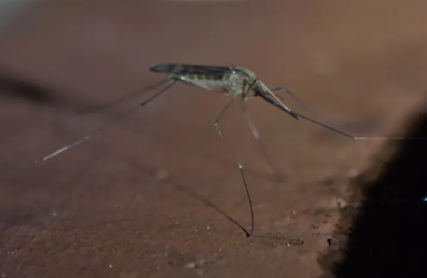
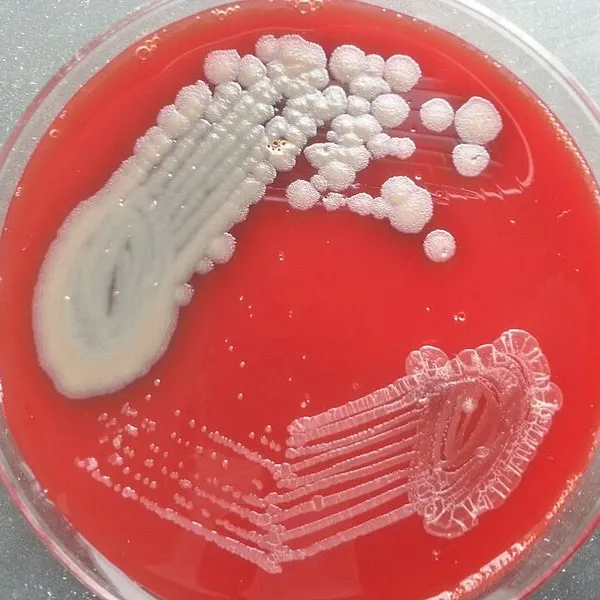

Cambridge Primary Checkpoint · Science 0097 · Stage 6 · Biology
Diseases, Hygiene and the Body's Defences
What causes infectious diseases, how they spread through water, food, body fluids and insects, how hygiene stops them, and how skin, mucus and stomach acid defend the body.
British & IGCSE › Checkpoint 6 › Checkpoint 6 Science — Complete Course
- Know that some diseases are caused by infection with viruses, bacteria, parasites or fungi, and that these can be passed from one host to another (6Bp.02)
- Describe how good hygiene controls the spread of diseases passed on through water, food and body fluids, and how to avoid being bitten by insect vectors (6Bp.03)
- Know that the body has defences against infectious diseases, including the skin, stomach acid and mucus (6Bp.04)
1. What causes infectious diseases?
Some diseases, such as a cold or food poisoning, can be caught from another person, an animal or from dirty water or food. These are infectious diseases. They are caused by tiny living things (or particles) called pathogens — often called 'germs'. Most pathogens are so small that you need a microscope to see them. Other diseases, such as diabetes or most heart disease, are not infectious: you cannot catch them from someone.
When a pathogen gets inside a living thing and starts to multiply, we say the living thing is infected. The living thing that the pathogen lives in is called the host. A disease spreads when the pathogen passes from one host to another host.
| Type of pathogen | What it is like | Examples of diseases |
|---|---|---|
| virus | The smallest pathogen. It can only multiply inside the cells of a host. | common cold, flu (influenza), measles, chickenpox, COVID-19 |
| bacteria (one: bacterium) | Single cells, much smaller than human cells. Many bacteria are harmless or even useful; only some cause disease. | food poisoning (e.g. salmonella), cholera, tuberculosis (TB) |
| fungi (one: fungus) | Grow as tiny threads or single cells, often in warm, damp places. | athlete's foot, ringworm (a skin infection — not a worm!) |
| parasites | Living things that live in or on a host and harm it. Some are single cells, some are worms. | malaria (a parasite carried by mosquitoes), bilharzia (a parasite worm in canal water), tapeworm |
| Word / phrase | Meaning / use |
|---|---|
| infectious disease | مرض معدي — a disease that can be passed from one host to another |
| pathogen | مسبب المرض (الجرثومة) — a living thing or particle that causes disease |
| host | العائل — the living thing that a pathogen lives in |
| virus | فيروس |
| bacteria | بكتيريا |
| fungus / fungi | فطر / فطريات |
| parasite | طفيل — lives in or on a host and harms it |
| vector | ناقل المرض — an animal (often an insect) that carries a pathogen from one host to another |
| hygiene | النظافة الشخصية — keeping clean to stop the spread of disease |
| mucus | المخاط — sticky liquid that traps pathogens |
2. How pathogens pass from host to host
| Route | How it happens | Example |
|---|---|---|
| water | Pathogens from faeces (toilet waste) get into drinking water, or live in rivers and canals. | cholera (bacteria) from dirty drinking water; bilharzia (parasite) enters through the skin of people who swim or wade in infected canal water |
| food | Pathogens on raw meat, unwashed hands or flies get onto food; food left warm lets bacteria multiply. | food poisoning from undercooked chicken |
| body fluids | Tiny droplets from coughs and sneezes, saliva, or blood carry pathogens to another person. | cold and flu spread in droplets when people cough or sneeze |
| insect vectors | An insect bites an infected person, picks up the pathogen, then bites someone else. | female mosquitoes spread malaria and dengue fever |

3. Good hygiene controls the spread
Hygiene means the things we do to keep clean so that pathogens cannot reach a new host. Learn at least two actions for every route — Checkpoint often asks 'Describe one way to…'.
| Route | Good hygiene that stops it |
|---|---|
| water | drink clean, treated or boiled water; use toilets and keep sewage away from drinking water; wash hands after using the toilet; do not swim in canals or still river water (bilharzia) |
| food | wash hands with soap before preparing and eating food; cook meat thoroughly; keep raw meat away from cooked food; wash fruit and vegetables in clean water; keep food in a fridge and cover it from flies |
| body fluids | cough or sneeze into a tissue or your elbow, then throw the tissue away and wash your hands; do not share cups, toothbrushes or razors; cover cuts with a plaster |
| insect vectors | sleep under a mosquito net; use insect repellent on skin; wear long sleeves and long trousers in the evening; use screens on windows; remove standing water (in old tyres, pots, buckets) where mosquitoes lay their eggs |
Water rinses some pathogens off, but soap lifts away the grease and dirt that pathogens stick to, so many more are washed away. Rub all parts of your hands (palms, backs, between fingers, under nails) for about 20 seconds, then rinse and dry with a clean towel.
الأمراض المعدية سببها جراثيم (pathogens): فيروسات viruses، بكتيريا bacteria، فطريات fungi، وطفيليات parasites. بتنتقل من عائل (host) لعائل تاني عن طريق المية الوسخة، الأكل، سوائل الجسم (العطس والكحة والدم)، أو الحشرات الناقلة زي الناموس (vectors). النظافة (hygiene) بتقطع الطريق ده: اغسل إيدك بالصابون، اشرب مية نضيفة، اطبخ الأكل كويس، واستخدم الناموسية. ومتنزلش الترعة عشان البلهارسيا!
4. The body's defences
Pathogens are all around us, yet we are healthy most of the time. This is because the body has defence mechanisms that stop most pathogens getting in, or kill them when they do.
| Defence | How it protects you |
|---|---|
| skin | A tough barrier that covers the body, so pathogens cannot get through. If the skin is cut, pathogens can get in — so clean and cover cuts. A scab forms to seal the cut. |
| mucus | A sticky liquid made in the nose and the tubes leading to the lungs. It traps pathogens and dust in the air you breathe. Tiny hairs move the mucus up and away, and it is swallowed or blown out of the nose. |
| stomach acid | The stomach makes a strong acid (hydrochloric acid). It kills most pathogens in the food and drink you swallow. |
If pathogens do get inside the body, the blood contains white blood cells that attack them. You will learn more about these in later stages; at Stage 6 you must know the three defences in the table.
Skin = barrier (keeps out). Mucus = trap (catches). Stomach acid = kill (destroys). Use these verbs in your answers.
5. An investigation: does handwashing work?
A class tested four ways of cleaning hands. After cleaning, a learner touched a sterile agar plate (a dish of jelly that bacteria can grow on). The plates were taped shut and left warm for two days. Each spot of bacteria that grows is called a colony. The class counted the colonies.

- Independent variable (what they changed): how the hands were cleaned.
- Dependent variable (what they measured): the number of colonies.
- Control variables (kept the same): same person's hands, same type of agar plate, same time touching, same temperature and time left to grow.
- Safety: keep plates taped shut and never open them after growing — some bacteria could be harmful; wash hands after the practical.
- Conclusion: soap and water removed the most bacteria (fewest colonies: 6); not washing left the most (48).
- Improve: repeat with more people and take a mean, so the results are more reliable.
A bar chart is used because the independent variable (way of cleaning) is in words — it is not a number that changes smoothly.
Worked examples
Worked example 1 — Malaria is caused by a parasite. Describe how malaria passes from one person to another. [2 marks]
- Say what carries it: a mosquito (an insect vector).
- Say how: it bites an infected person and takes in the parasite, then bites another person and passes the parasite on.
Answer: a mosquito bites an infected person (1) and then passes the parasite to the next person it bites (1). Common mistake: writing 'malaria is a virus' or 'you catch it by touching someone'.
Worked example 2 — Give two ways a family can avoid being bitten by mosquitoes. [2 marks]
Answer: any two of: sleep under a mosquito net; use insect repellent; wear long sleeves and long trousers; put screens on windows; empty standing water where mosquitoes breed. Exam tip: two different ideas — 'long sleeves' and 'long trousers' count as one idea (covering skin).
Worked example 3 — Explain how stomach acid helps to protect the body. [1 mark]
Answer: it kills (most) pathogens / bacteria in the food or drink we swallow. Common mistake: 'it digests food' is true but does not answer a question about defence.
Worked example 4 — Use the bar chart. How many fewer colonies grew after washing with soap and water than after washing with water only? [1 mark]
- Read water only: 30 colonies (each small square is 2 colonies).
- Read soap and water: 6 colonies.
- Subtract: 30 − 6 = 24.
Answer: 24 colonies.
Worked example 5 — Ahmed says: "Athlete's foot is caused by bacteria." Is he correct? Give a reason. [1 mark]
Answer: No — athlete's foot is caused by a fungus, which grows in warm, damp places such as between toes. (A yes/no alone earns no mark; the reason is needed.)
- Saying all bacteria are harmful. Many are harmless or useful; only some cause disease.
- Calling every pathogen a 'virus'. Learn the four groups: viruses, bacteria, fungi, parasites.
- Thinking the mosquito is the pathogen. The mosquito is the vector; the parasite inside it causes malaria.
- Writing 'wash hands' with no detail. Better: 'wash hands with soap before eating / after using the toilet'.
- Mixing up the defences: mucus traps, skin is a barrier, stomach acid kills.
- Writing 'ringworm is a worm' — it is a fungus.
- Sort diseases or descriptions into virus / bacteria / fungus / parasite.
- Describe one way to stop a disease spreading by a named route — link your action to the route (water → boil it).
- Explain how a defence works in one sentence with a key verb (trap / barrier / kill).
- Investigation items: name the independent and dependent variables, give a control variable, read a bar chart, suggest an improvement (repeat, take a mean).
- Look at the number of marks: 2 marks usually means two separate points.
Practice
- Infectious diseases are caused by pathogens: viruses, bacteria, fungi and parasites.
- Pathogens pass from host to host through water, food, body fluids and insect vectors.
- Hygiene breaks the route: soap and handwashing, clean or boiled water, well-cooked food, tissues for coughs.
- Avoid bites: mosquito nets, repellent, long sleeves, window screens, no standing water.
- Defences: skin (barrier), mucus (traps), stomach acid (kills).
All pages in this course
Start here
- Checkpoint 6 Science: The Test and How to Prepare
- Thinking and Working Scientifically: Investigations, Variables, Tables and Graphs
Biology
- The Heart and Circulatory System
- The Lungs and Respiratory System
- Human Reproductive System and Puberty
- Diseases, Hygiene and the Body's Defences
- Food Chains, Food Webs, Energy and Toxins
Chemistry
- Properties of Substances: Melting and Boiling Points, Gases, Conductors
- Reversible Changes and Dissolving
- Boiling and Evaporation
- Chemical Reactions: Reactants, Products and Evidence
Physics
- Mass, Weight and Gravity
- Force Diagrams and Forces on Moving Objects
- Floating and Sinking
- Light: Reflection and Refraction
- Electric Circuits, Symbols, Series and Parallel
Earth and space
Practice tests